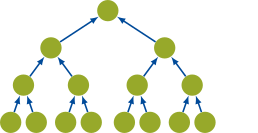
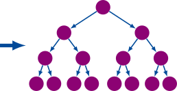

Aggregation and disaggregation
Plans describe the node visits. Schedules split them into chunks. Traversal then calls the method's leaf operations, transfers, modulation, and couplings. These are separate responsibilities.
Upward: aggregation

H2Factory.aggregate!(A, x) gathers leaf coefficients from x and forms source moments. For an internal node, it transfers and adds its children's moments. The plan determines which moments must remain stored for later reads.
The first contribution overwrites its destination; later contributions accumulate. A custom transfer must preserve both modes.
Downward: disaggregation

H2Factory.disaggregate!(y, A) propagates received expansions towards the leaves and projects them into y. In the default mode it also applies I2O from well-separated source nodes.
H2Factory.farmul!(y, A, x) orchestrates both passes. Call it for a complete far product rather than manually composing phases without their initialization and storage rules.
Two placements of I2O
| H2Trees mode | Upward | Downward |
|---|---|---|
AggregateMode() | Aggregate | Translate and disaggregate |
AggregateTranslateMode() | Aggregate and translate | Disaggregate |
H2Trees builds the corresponding forward and transposed plans. Expose all four side-specific plans on the core. H2Factory.farmulmode(core, H2Factory.isForward()) must agree with their construction.
The H2Trees plans guide explains plan generation. Here the important contract is execution: moments read later must persist, scratch follows the chunk's level, and orientation selects the right side. Custom traversal hooks must preserve those properties.